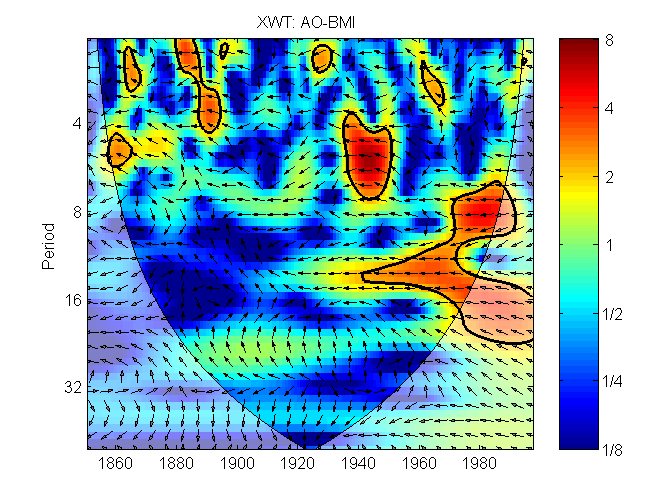

This example illustrates how simple it is to do continuous wavelet transform (CWT), Cross wavelet transform (XWT) and Wavelet Coherence (WTC) plots of your own data.
The time series we will be analyzing are the winter Arctic Oscillation index (AO) and the maximum sea ice extent in the Baltic (BMI).
First we load the two time series into the matrices d1 and d2.
seriesname={'AO' 'BMI'};
d1=load('jao.txt');
d2=load('jbaltic.txt');
The time series of Baltic Sea ice extent is highly bi-modal and we therefore transform the timeseries into a series of percentiles. The transformed series probably reacts 'more linearly' to climate.
d2(:,2)=boxpdf(d2(:,2));
The CWT expands the time series into time frequency space.
figure('color',[1 1 1]) tlim=[min(d1(1,1),d2(1,1)) max(d1(end,1),d2(end,1))]; subplot(2,1,1); wt(d1); title(seriesname{1}); set(gca,'xlim',tlim); subplot(2,1,2) wt(d2) title(seriesname{2}) set(gca,'xlim',tlim)

The XWT finds regions in time frequency space where the time series show high common power.
figure('color',[1 1 1]) xwt(d1,d2) title(['XWT: ' seriesname{1} '-' seriesname{2} ] )
The WTC finds regions in time frequency space where the two time series co-vary (but does not necessarily have high power).
figure('color',[1 1 1]) wtc(d1,d2) title(['WTC: ' seriesname{1} '-' seriesname{2} ] )

Copyright (C) 2002-2004, Aslak Grinsted
This software may be used, copied, or redistributed as long as it is not sold and this copyright notice is reproduced on each copy made. This routine is provided as is without any express or implied warranties whatsoever.